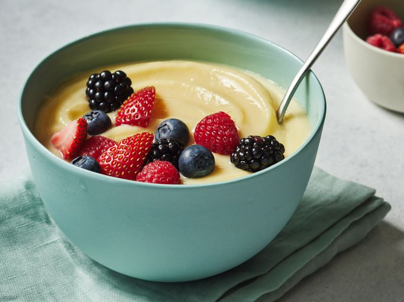

Custard

Description
Custard is a decadent dessert made with eggs, milk, and sugar. Eggs are responsible for custard's thick and velvety texture, but some recipes (such as this one) call for thickeners such as cornstarch or arrowroot for extra richess.
Ingredients
- Milk
- Butter
- Vanilla
- Eggs
- Sugar
- cornstarch
Steps
- Gather all ingredients.
- Place milk, vanilla extract, and butter in a saucepan.
- Cook and stir over medium heat until simmering; remove from heat before it comes to a boil.
- Whisk eggs, sugar, and cornstarch together in a bowl until sugar dissolves.
- Set the saucepan back over low heat. Pour in egg mixture slowly, whisking constantly, until custard thickens enough to coat the bottom of a spoon, 5 to 10 minutes.
- Serve warm or transfer custard into a large bowl and cover.
- Allow to cool before chilling. Enjoy!